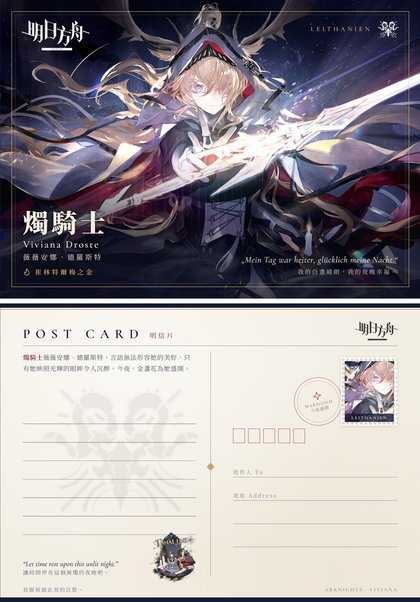
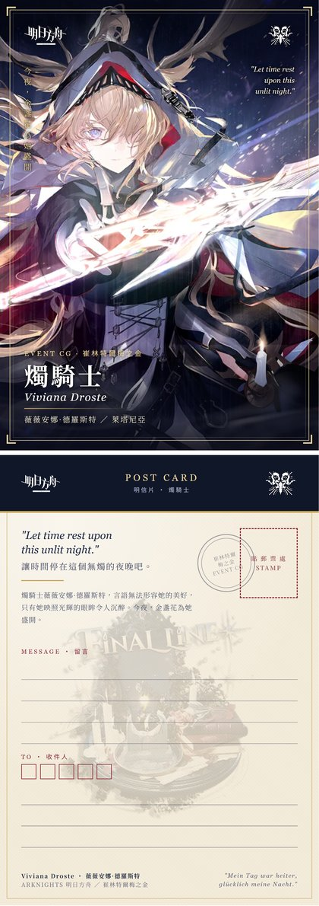
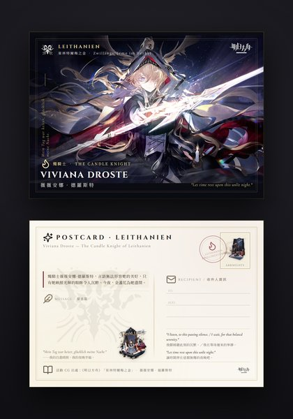
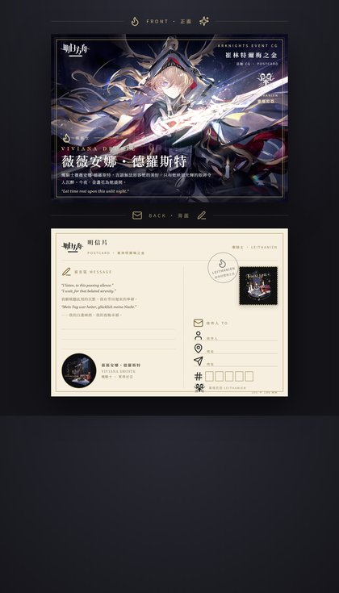
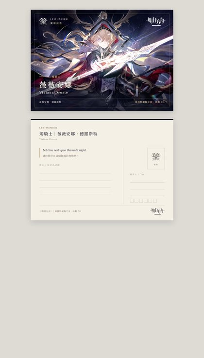
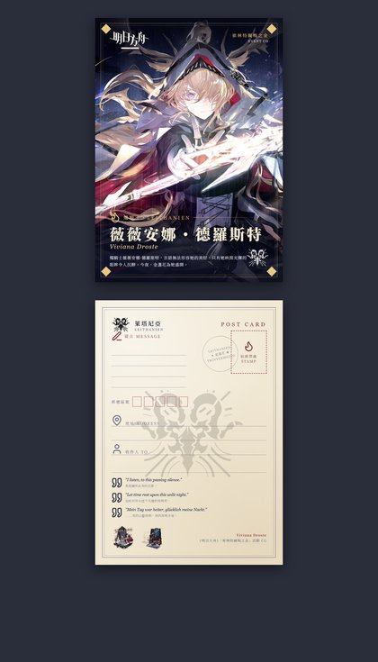

Opus 5.5
Claude Code 子代理人類 #1AI 優
人類評語我的天啊，許願機大人。
AI 評語正背面都完整
LLM 能力測試 · 2026-10-14
同一組五道實務題，交給 Claude Opus 5.5、Claude Sonnet 5.5、Gemini 4 Argon、Muse Wonder、GPT-6.1 Sol 作答。每張卡片可直接開啟該模型的作答、思考過程與原始回應。
AI 比較報告 (詳細評語與成本) 人類主觀評價全文 GitHub 倉庫
「人類 #n」是評審在該題的主觀名次 (並列同名次)；「AI」是 Claude 依正確性、遵循指示與成本寫的比較報告評分。兩者都只在同一題內比較。
| 題目 | Opus 5.5 | Sonnet 5.5 | Gemini 4 Argon | Muse Wonder | GPT-6.1 Sol |
|---|---|---|---|---|---|
| CG 明信片設計 | 人類 #1AI 優 | 人類 #2AI 良 | 人類 #4AI 優 | 人類 #6AI 可 | 人類 #3AI 良 |
| email 書寫 | 人類 #2AI 優 | 人類 #5AI 可 | 人類 #1AI 可 | 人類 #3AI 良 | 人類 #4AI 良 |
| 學測作文 | 人類 #1AI 優 | 人類 #1AI 良 | 人類 #5AI 良 | 人類 #3AI 優 | 人類 #4AI 優 |
| 時事銳評 | 人類 #2AI 良 | 人類 #4AI 良 | 人類 #1AI 可 | 人類 #2AI 優 | 人類 #5AI 良 |
| 數學配平 | 人類 未評AI 優 | 人類 未評AI 待定 | 人類 未評AI 弱 | 人類 未評AI 優 | 人類 未評AI 良 |
AI 評分由高到低：優、良、可、弱；「待定」表示答案是否成立取決於假設。
替一張遊戲 CG 設計 A6 明信片正背面，輸出單一 HTML。
prompt (API 版)prompt (App 版)附件人類評語全文
人類排序O5.5 > So5.5 >> Sol6.1 > G4A = So5.5_API > Mu2

人類評語我的天啊，許願機大人。
AI 評語正背面都完整

人類評語也不錯，封你為小許願機。
AI 評語正面佳，背面較弱

人類評語元素堆太滿，什麼都想留，不做取捨。
AI 評語設計最完整，主圖有黑邊

人類評語小毛病不算少，跟G4A一樣也沒有做任何取捨，把所有素材全堆上去了。
AI 評語文字溢出、被遮

人類評語無功無過。
AI 評語乾淨無瑕疵，但較素

人類評語補測了Sonnet 5.5 API端口，後版面icon放太大了，線條很粗，沒有檢查，前版面人物放得有點偏右，所有給他的元素都堆上去了(簡體中文沒轉成繁體中文)，整體來說水平跟G4A做的差不多。
判讀筆電鍵帽照片、說明規格與購買管道，並寫一封英文詢價信。
prompt (API 版)prompt (App 版)附件人類評語全文
人類排序G4A > O5.5 >>>> Mu2 > Sol6.1 > So5.5
人類評語信件可用，完全不用改。
AI 評語查到維修手冊與料號
人類評語信件需調整後才可使用，但整體比Mu2好一些，但有一些句式的禮貌程度不足，太隨意也太壓力了，比如這句："can you declare the package value accordingly?"，而且So5.5是唯一用Hello開頭的，好沒禮貌!
AI 評語注音標錯，信中一句不妥
人類評語信件可用，完全不用改；但信中一些過於自信的說明可能會被對方指正，這點以這封信的定位(請教語氣)來說倒是還好，不是太大的問題。
AI 評語多處講得過度肯定
人類評語信件需調整後才可使用，比較不建議讓Mu2碰這種未知問題很多的任務，其模型底色防禦性比較強，不確定的事情它是真不敢做也不敢寫。
AI 評語謹慎、不編造
人類評語信件可用，完全不用改。但回答用戶時有點膽小，過於保守且偏向防禦性說明，對於協助用戶解決問題起不到實際幫助，用戶還是要自己通過搜尋引擎才能找到答案。
AI 評語謹慎，照片描述最準
以考生身分作答 115 學測國寫兩大題，有字數限制。
prompt (API 版)prompt (App 版)附件人類評語全文
人類排序O5.5 = So5.5 > Mu2 >> Sol6.1 > G4A
人類評語優秀，是厲害的作文寫手能寫出來的文稿，抓到了起承轉合的脈絡，也把角色人設掌握得比較精良。
AI 評語扣圖最緊
人類評語優秀，是厲害的作文寫手能寫出來的文稿，抓到了起承轉合的脈絡，也把角色人設掌握得比較精良。
AI 評語問題 (二) 字數偏少
人類評語偽人文字，視角像在寫一個童話劇本，完全沒有帶入自己考生身分，不像18歲小孩，像成年人模擬小孩寫作。
AI 評語結構完整
人類評語品質尚可，比較像18歲孩子能寫出來的文稿，但有一些排比句可以再優化，排比句用的多了會很有AI感。
AI 評語文筆最佳，背面最短
人類評語字面是死人文字，讀起來一點起伏都沒有，還有GPT特色的雷霆大換行，比G4A的偽人文字還令我畏懼。但主軸是清晰且易懂的，抽調字面，細寫起來邏輯是挺順暢的。
AI 評語選材最獨特，未扣圖
根據三篇新聞，以商科自媒體人口吻寫星巴克收費新制的粉專長文。
prompt (API 版)prompt (App 版)附件新聞來源人類評語全文
人類排序G4A >>> Mu2 = O5.5 > So5.5 >> Sol6.1
人類評語品質不錯，觀點相對中規中矩，可以直接上傳作為一篇平台上普通的時事評價文。
AI 評語結構清楚，補了外部資料
人類評語品質不錯，可以直接上傳作為一篇平台上普通的時事評價文。列舉式寫作讀起來視覺上比較舒適，但好像沒留意社媒平台不一定支援md格式。邏輯脈絡有點小問題，似乎沒怎麼用上財報資訊，只是當成背景帶過去了，但整體而言還算講明白這件事了(會做取捨的模型丟掉不能丟的部分了)。
AI 評語分析細，略超篇幅
人類評語極佳，高品質，加一個聳動的標題就可以直接用了，而且我覺得大家會喜歡，這才是Gemini的實力!
AI 評語資訊最多，但篇幅超出一倍
人類評語品質不錯，有台灣味，可以直接上傳作為一篇平台上普通的時事評價文。
AI 評語篇幅最準，口吻最在地
人類評語雷霆大換行+防禦型寫作嘛，不賴。不能直接用，要改完才能傳平台。
AI 評語篇幅準、最持平，不夠銳
三個計畫的業務費配平，求最少改動的核銷方案。
prompt (API 版)prompt (App 版)附件
人類排序未評 (評審表示數學題交給客觀計算，請看比較報告)
AI 評語改 1 盒歸零
AI 評語0 盒歸零，靠混價假設
AI 評語未歸零，最佳值算錯
AI 評語與 Opus 同解，代價列得最完整
AI 評語歸零，但改報 11 盒